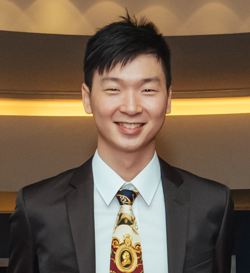

Ting-Wu Rudy Chin (金廷武)
|  | Ph.D. Candidate, |
About me
I am a third-year Ph.D. student co-advised by Prof. Diana Marculescu and Prof. Gauri Joshi. My research interests include model compression and trasnsfer learning for deep ConvNets.
Before joining CMU, I received the B.S. and M.S. degrees in computer science from National Chiao Tung University (NCTU), in 2015 and 2017, respectively.
Industrial Experiences
|
|
 |
|
First-authored Peer-reviewed Publications
Towards Efficient Model Compression via Learned Global Ranking
Ting-Wu Chin, Ruizhou Ding, Cha Zhang, Diana Marculescu
The IEEE Conference on Computer Vision and Pattern Recognition (CVPR’20) (Oral)
[PDF][Code]AdaScale: Towards Real-time Video Object Detection using Adaptive Scaling
Ting-Wu Chin, Ruizhou Ding, Diana Marculescu
Conference on Machine Learning and Systems (MLSys’19) (Oral, 17% Acceptance Rate)
[PDF][Talk]Domain-Specific Approximation for Object Detection
Ting-Wu Chin, Chia-Lin Yu, Matthew Halpern, Hasan Genc, Shiao-Li Tsao, Vijay Janapa Reddi
IEEE Micro, SI: Autonomous Computing
[PDF]
First-authored Workshop Paper
Layer-compensated Pruning for Resource-constrained Convolutional Neural Networks
Ting-Wu Chin, Cha Zhang, Diana Marculescu
in NeurIPS 2018 Workshop on Machine Learning on the Phone and other Consumer Devices (MLPCD 2) (Oral)
Peer-reviewed, non-archival, and a four-page short paper. It is later improved and become our CVPR work “LeGR”
[arXiv][Code]
First-authored Pre-prints
Improving the Adversarial Robustness of Transfer Learning via Noisy Feature Distillation
Ting-Wu Chin, Cha Zhang, Diana Marculescu
[arXiv] [Code]On the Pareto Efficiency of Quantized CNN
Ting-Wu Chin, Pierce Chuang, Vikas Chandra, Diana Marculescu
[OpenReview]
Co-authored Peer-reviewed Publications
Regularizing Activation Distribution for Training Binarized Deep Networks
Ruizhou Ding, Ting-Wu Chin, Diana Marculescu, Zeye Liu
The IEEE Conference on Computer Vision and Pattern Recognition (CVPR’19)
[PDF]FLightNNs: Lightweight Quantized Deep Neural Networks for Fast and Accurate Inference
Ruizhou Ding, Zeye Liu, Ting-Wu Chin, Diana Marculescu, R. D. (Shawn) Blanton
ACM/IEEE Design Automation Conference (DAC’19)
[PDF]Understanding the Impact of Label Granularity on CNN-based Image Classification
Zhuo Chen, Ruizhou Ding, Ting-Wu Chin, Diana Marculescu
ICDM 2018 Workshop on Data Science and Big Data Analytics (DSDA)
[PDF]Designing Adaptive Neural Networks for Energy-Constrained Image Classification
Dimitrios Stamoulis, Ting-Wu Chin, Anand Krishnan Prakash, Haocheng Fang, Sribhuvan Sajja, Mitchell Bognar, Diana Marculescu
Proceedings of the 37th International Conference on Computer-Aided Design (ICCAD’18)
[PDF]
Service
Reviewer for ICML’20, IEEE Journal of Selected Topics in Signal Processing, NeurIPS’18 Workshop CDNNRIA
Sub-reviewer for MLSys’20